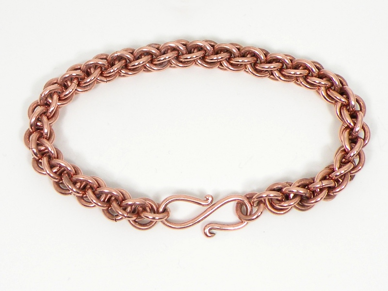
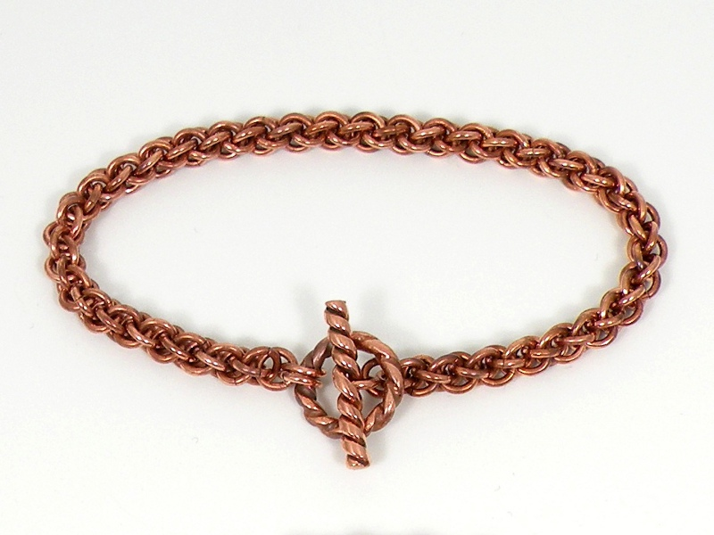
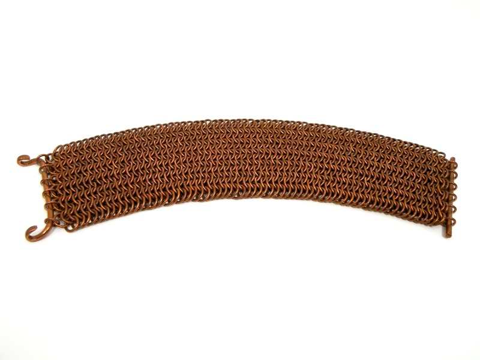
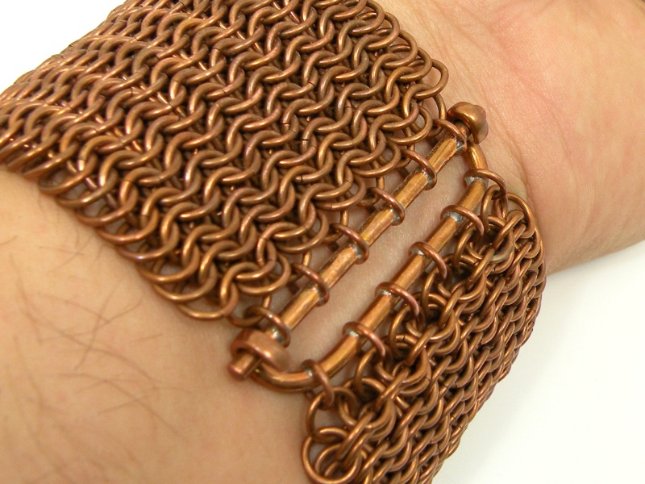

Chainmaille Bracelets - Copper Chainmaille Bracelets - Copper
Chainmaille Bracelets - Copper Chainmaille Bracelets - CopperCopper was the first metal I employed for my chainmaille jewelry because I had an abundance of electrical wire, and unlike steel, I did not have to worry about rust. In addition, copper is easy to coil, cut, polish, and weave into any pattern I choose.
I also derive satisfaction from using copper due to scientific interest. Copper belongs to the same family on the periodic table as silver and gold, and shares many attributes, to a greater or lesser degree. For instance, all three metals are very malleable and resistant to oxidation, copper being the least and gold the most, in both cases. Copper, silver and gold are all dense (heavy) metals, again, in that order. Further, the three are all highly electrically conductive, this time however, gold is the loser, as copper is more conductive and silver the most.
In recent years, hand-made chainmaille jewelry has become extremely popular and it can be found in abundance at craft fairs and in online stores. I take great pride, however, in the fact that I make my jewelry entirely by hand, from (often salvaged) wire all the way to a finished piece. I make my own clasps, coil and cut my own rings, and do all polishing and weaving myself - there are no shortcuts. The above bracelet bears a toggle clasp of my own design. The difference in color from the preceding bracelet has only to do with the amount of oxidation. The first was freshly polished before photographing, the second was not. Copper will age from the light pink hue of a new polish to a rich orange when left untouched.
While most chainmaille jewelry bears no resemblance to the armor, there are exceptions. The following bracelet (perhaps just 'brace') is made using a pattern seen in actual armor.
European chainmaille armor was commonly what is called 4-in-1, meaning that each ring passed through four others. In this copper brace, each ring passes through six others, making a very dense fabric of metal, yet it remains fairly flexible.
The latch took some thought, and is my own design. It is very secure, yet remains easy to fasten without assistance. The latch being the weak point, relying upon single rings for attachment to the whole, I employed solder to both close the rings and sercure them to the bars. Unfortunately (and this may be one reason that copper jewelry is so uncommon) there is no solder that matches the color of copper. The melting temperature of a solder must be well below that of the metal to be joined and even a very tiny percentage of alloying elements will radically alter the color of copper, unlike gold which retains its characteristic yellow color even when quite impure.
Created by Sean Corron, April 2, 2011.